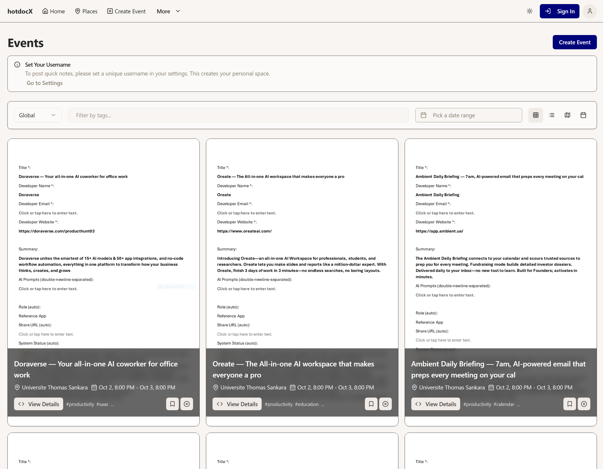
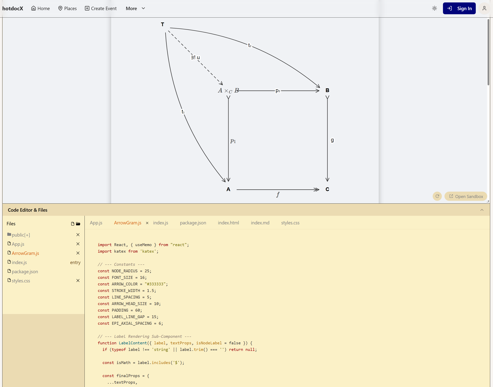
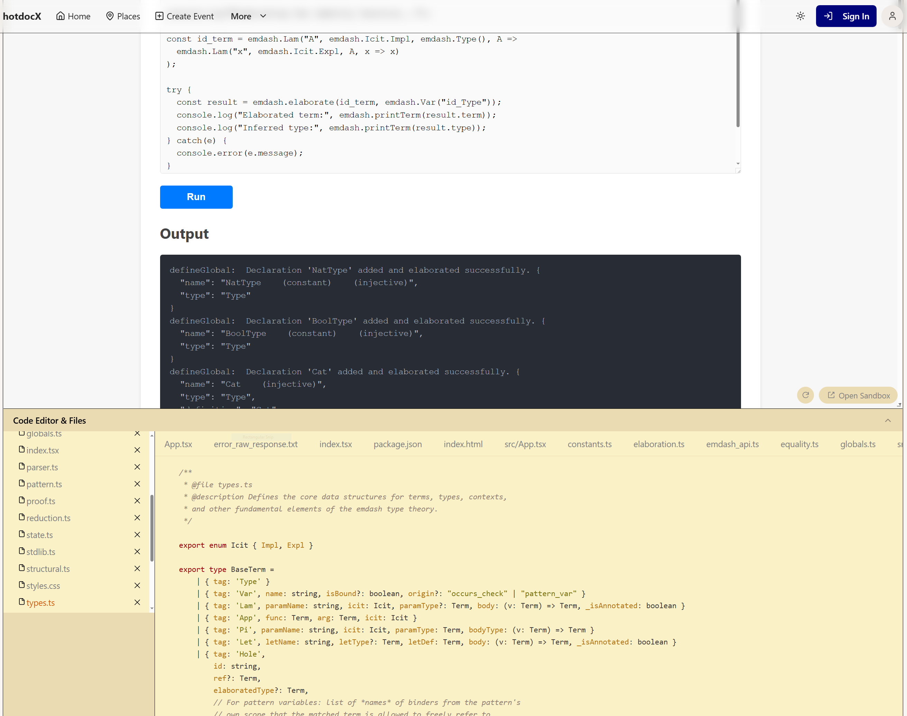
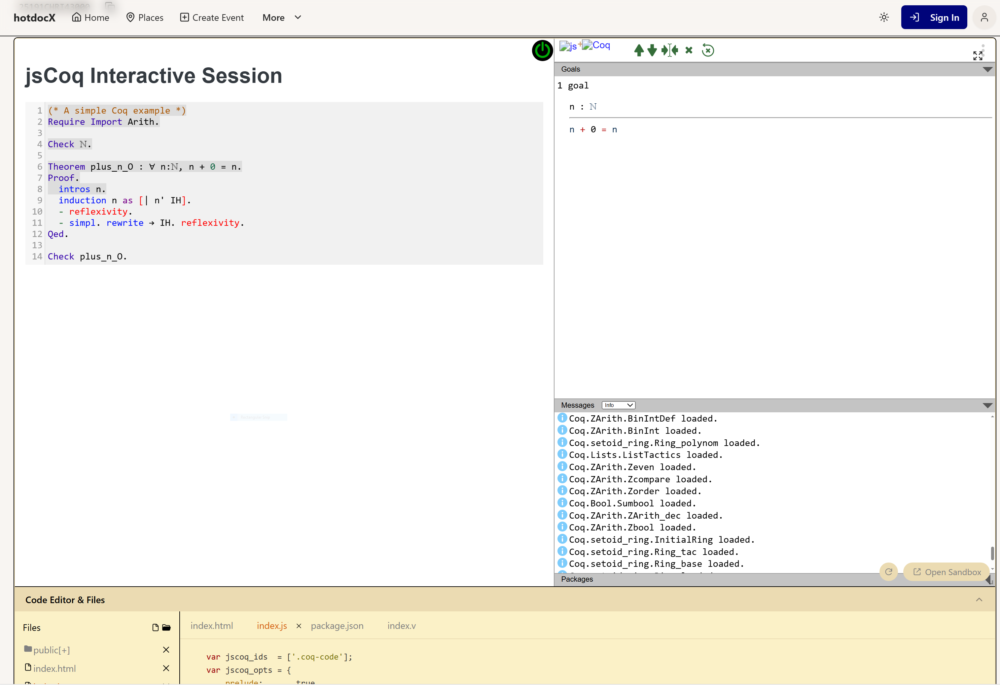

Coq is a cornerstone of formal methods, but sharing its rich, interactive proofs is hard.
An AI-powered social marketplace that transforms documents into live, interactive web applications.

We're moving from "papers-with-code" to "papers-as-apps".
A user provides a document (PDF, LaTeX, etc.) and a prompt. Our AI pipeline uses a template to generate a runnable application.
Arrowgram Template

Renders commutative diagrams from natural language.Emdash Template

Provides a live environment for our logical framework.The platform is flexible and context-aware. Now, let's add Coq to the mix.
We created a `jsCoq` template for the hotdocX ecosystem.
Any Coq script can become a first-class, interactive, and shareable hotdocX event.

An interactive jsCoq session embedded within a hotdocX event.
Previous platforms were often excellent academic projects but lacked a model for long-term sustainability.
hotdocX is built from the ground up on a creator economy.
The co-location of `jsCoq` and our native framework, `Emdash`, opens a unique research opportunity.
We can systematically augment the Emdash (λΠ-calculus) kernel with the features of CIC, all within a native TypeScript environment.
A "hackable" kernel for teaching CIC without a complex build setup.
Rapidly prototype new tactics and language features in TypeScript.
A native JS kernel is easier for AI agents to interact with than a compiled binary.
We have a working platform, a clear vision, and a sustainable model.
To move from a developer preview to a robust product for the community, we need your support.
Your contribution, whether individual or institutional, directly funds development, infrastructure, and community growth.
Sponsoring provides premium and VIP tiers on the hotdocX platform.
Platform: hotdocx.github.io
Sponsor: github.com/sponsors/hotdocx